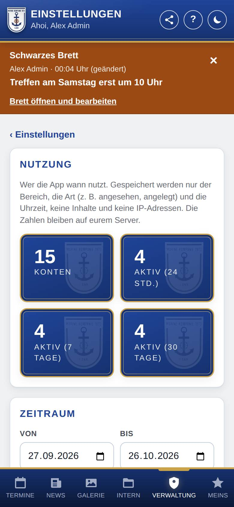

Nutzung
Hier siehst du, wie eure Kompanie die App nutzt: wie viele aktiv sind, welche Bereiche gefragt sind und wer lange nicht mehr in der App war. Die Seite sehen nur Admins.

So öffnest du die Seite
Tippe unten auf Verwaltung, dann auf Einstellungen und auf Nutzung.
Was du hier siehst
- Konten und Aktiv (24 Std.), Aktiv (7 Tage), Aktiv (30 Tage): wie viele Konten es gibt und wie viele davon in dieser Zeit etwas in der App gemacht haben.
- Zeitraum mit Von und Bis: für die Zahlen darunter. Am Anfang sind es die letzten 30 Tage, höchstens geht ein Jahr.
- Aktive Personen je Tag: ein Balken je Tag, an dem jemand die App genutzt hat.
- Nutzung je Bereich: welcher Bereich wie oft genutzt wurde und von wie vielen Personen in den letzten 30 Tagen. Allgemein sind Seiten wie die Verwaltung, das eigene Konto und die Einstellungen.
- Als CSV-Datei herunterladen: alle Einträge im Zeitraum mit Zeit, Name, Bereich und Aktion, z. B. für Excel.
- Mitglieder: alle Konten, die im gewählten Zeitraum aktiv waren, mit dem Zeitpunkt, an dem sie zuletzt aktiv waren. Wer am längsten nicht aktiv war, steht oben.
- Erfassung je Person: der Schalter, ob die App sich merkt, wer wann was genutzt hat.
So gehst du vor
Sehen, wer lange nicht in der App war
- Setze bei Mitglieder das Häkchen Nur, wer seit 30 Tagen nicht aktiv war.
- Tippe auf eine Person, um ihren Verlauf im gewählten Zeitraum zu sehen: wann sie welchen Bereich angesehen oder geändert hat.
Die Zahlen als Datei mitnehmen
- Wähle bei Zeitraum den Beginn und das Ende.
- Tippe auf Als CSV-Datei herunterladen.
- Die Datei enthält Namen. Lösche sie, wenn du sie nicht mehr brauchst.
Die Erfassung je Person ausschalten
- Nimm bei Erfassung je Person das Häkchen heraus.
- Bestätige die Rückfrage. Alle bisherigen Einträge mit Namen werden sofort gelöscht, auch „zuletzt aktiv“.
Danach zählt die App nur noch, wie viele Personen welchen Bereich nutzen, ohne Namen. Die Liste Mitglieder und die CSV-Datei gibt es dann nicht mehr. Du kannst die Erfassung jederzeit wieder einschalten. Sie beginnt dann von vorn.
Gut zu wissen
- Gespeichert werden nur der Bereich, die Art (angesehen, angelegt, geändert, gelöscht, abgestimmt, angemeldet) und die Uhrzeit. Was jemand eingetragen hat, wird nicht gespeichert, ebenso keine IP-Adressen und keine Angaben zum Gerät.
- Schaut jemand denselben Bereich mehrmals innerhalb von 15 Minuten an, zählt das einmal. Was offline ohne Verbindung angesehen wird, zählt nicht.
- Einträge je Person werden nach 90 Tagen automatisch gelöscht. Danach bleiben nur Tageszahlen ohne Namen. Wird ein Konto gelöscht, verschwinden auch seine Einträge.
- Die Einträge bleiben auf eurem Server und kommen nicht in die Datensicherung.
- Die Erfassung je Person ist zu Beginn eingeschaltet. Informiert eure Mitglieder darüber, z. B. in der Datenschutzerklärung. Die App zeigt den Mitgliedern dazu keinen eigenen Hinweis.
- Wenn ihr den Statusmeldungen zugestimmt habt, gehen nur Summen an die Betreuer der App: Zahl der Konten, aktive Konten und Personen je Bereich, nie Namen (siehe Zustand und Updates).
- Schaust du dir die App gerade als andere Rolle an, zählt das nicht als Nutzung (siehe App als Rolle ansehen).